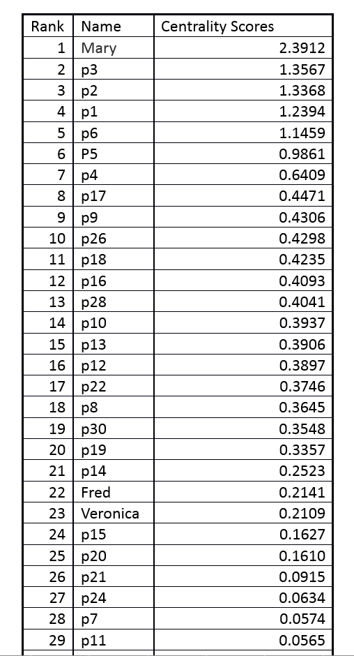

Hello! I am a sophomore in APPM/CSCI major.
I see the world as beautiful and full of miracles,
which are hidden from the common eye, but delving
deeper into practically any subject allows for amazing
discoveries. That is how I do.
analysis of today's research and proposal of its application.
Spectral Clustering
in application to image segmentation.
In a team of three, we investigated and applied the technique of spectral clustering in the context of identifying complicated, non-concave but connected features of map images that include rivers and lakes.
Link to download a writeup with a detailed description on the technique used and an analysis of the results. Spectral Clustering.pdf
Date: December 2014
Category: Technical Project
PageRank algorithm
in application to popularity rating.

I researched and implemented a primitive form of PageRank algorithm in MATLAB. My algorithm of choice relies on finding an eigenvector corresponding to the largest eigenvalue of an adjacency matrix in either directed or undirected graph. The found eigenvector is in itself a node ranking done by the relevance of nodes. In my example, I used friendship relation (ex: facebook friends/google circles) in order to find the most popular person in the group.
Date: October 2013
Category: Technical Project
SVD and DCT
in application to image compression.
Singular Value Decomposition (SVD) and Discrete Cosine Transform (DST) are radically different approaches to decomposition and consequent compression of an image.
SVD will identify most important singular vectors and “compress” an image using those vectors to reconstruct as much detail as possible without taking into an account the data from less important singular vectors.
DCT approach will instead use cosine transforms to “store” the data of pixels in least frequent cosine transforms; therefore, eliminating the noise and detail coming from more frequent cosine transforms.
Date: November 2014
Category: Technical Project
Preserving Intrinsic Motivation
Analysis of today's research and proposal of its application.
Modern psychology and sociology knowledge provides an invaluable insight into how people work and should work, yet plenty of modern businesses are confused or unaware of how those principles work. I analyzed a few experiments and theories in order to conclude my personal outlook on that matter.